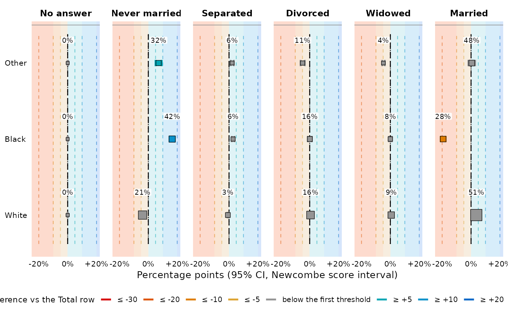

Draws every estimate of a table with its confidence interval, its significance and its colour –
for a cross-table from tab as much as for a regression table from
tab_reg. It reads the table and never re-fits anything: every number and every
colour comes from the cell it was printed from, so the figure and the table cannot disagree.
(Its sibling reg_check_plots is the opposite: model checks always re-fit, because
they are about residuals, which no table carries.)
Usage
forest_plot(
x,
columns = NULL,
what = c("auto", "effect", "level"),
observed = c("auto", "band", "point", "ci", "none"),
center = c("n", "estimate", "none"),
display = NULL,
layout = c("keep", "auto", "transpose"),
facet = NULL,
color = TRUE,
guide = c("gridlines", "bands", "none"),
intercept = FALSE,
totals = FALSE,
offset = 0.25,
label_offset = 0.3,
max_size = 6,
footer = c("short", "full", "none"),
footer_width = 130L,
legend = "auto",
theme = NULL,
lang = NULL,
caption = NULL,
subtext = TRUE,
return_data = FALSE,
...
)Arguments
- x
A table made with
tabortab_reg, or alistof tab. A list of tables sharing the samecol_vars(and notab_vars) is merged into one; any other list — severalrow_varsand/ortab_vars— is rendered one table after another, each keeping its own sub-tables.- columns
Value columns to draw, by name.
NULL(the default) draws the model columns of a regression table and every value column of a cross-table.- what
"auto"(the quantity the table's own interval is centred on),"effect"(the contrast: difference, ratio or odds ratio) or"level"(the percentage or mean – for a regression table this needseffect = "marginal").- observed
For a regression table with
empirical = TRUE:"auto","band"(the observed value with the margin of error of the gap),"point","ci"(the classic two-interval figure) or"none".- center
What marks the estimate:
"n"(the default) a square whose area is the level's own base, with the value printed just above it;"estimate"the value alone;"none"a constant square and no value, for a plot with many panels.- display
What that value prints – a
{}display template, asset_displaytakes ("\{est\} (\{base\})","est_ci", ...).NULL(the default) prints the cell's own primary token.- layout
Which axis is read and which is faceted:
"keep"(the default) reads the table's rows,"transpose"reads its columns,"auto"picks whichever has more levels (more legible whenever the table is much wider than tall). A regression table is never transposed.- facet
NULLfor one panel per estimate column,FALSEfor a single panel.- color
Set to
FALSEfor a plain plot with no colour measure.- guide
"gridlines"(the default),"bands"(shade the panel between the colour breaks – the teaching mode, which makes a cell's colour and its position one statement) or"none".- intercept
Draw the regression
Constantrow.- totals
Draw total rows and total columns.
- offset
How far below the estimate the observed value sits, as a fraction of a row; raise it for a tall figure with few rows. Under an adjustment colour the arrow takes this row and the observed value drops one further.
- label_offset
How far above the estimate its value is printed, as a fraction of a row.
- max_size
Area of the largest marker, when
center = "n"maps the base to it."short"(the default) the console's own footer,"full"the exports' longer one, or"none". Both are wrapped and set flush left.Characters per footer line, since a ggplot caption does not wrap on its own. Use a larger number for a wide figure, smaller for a narrow one.
- legend
Where the colour legend goes:
"auto"(the bottom),"right","left","top"or"none". When several ladders apply it cannot be a guide and goes to the caption instead.- theme
"light","dark"or one of the black-and-white publication palettes ("print_ready"and friends – a mark then reads its magnitude off a grey ramp).NULLfollowsgetOption("tabxplor.export_theme").- lang
Colour-legend language:
NULL(auto from the R/OS locale, English fallback),"en"or"fr".- caption
A caption.
NULLkeeps the table's own.- subtext
Include the table's subtext and footer lines in the caption.
- return_data
Return the long estimate tibble instead of the plot.
- ...
Retired arguments, accepted and ignored with a deprecation message since 2.0.0. Anything else is an error naming the argument you meant, as it already was in
tab().
Details
What is drawn. Always a deviation: the effect a regression estimates, or, for a
cross-table, the comparison its color = grades. The level it sits on (the
percentage, the mean, the adjusted probability) is printed above each whisker instead, so position
and number say two different things; what = "level" swaps them.
The gridlines are the table's colour ladder (set_color_breaks), labelled with the
same glyphs as the footer and continued as far as the data goes. The whisker takes the colour of
its cell whole, so significance is read off it and there are no stars.
A table that mixes units (an odds ratio beside a mean difference) gets one axis per panel, each in its own transform, with panels measuring the same thing sharing one comparable range.
The observed comparison. With empirical = TRUE, a regression estimate carries its crude
counterpart. observed = "band" (the default when testable) draws a bracket at plus-or-minus
the margin of error of the difference: the modelled point falls outside it exactly when the gap
test rejects. Two correlated intervals should not be compared by overlap, which is why the crude
one is not drawn by default; observed = "ci" restores it.
See also
reg_check_plots for the model checks, tab_export to export
the table itself.
Examples
if (requireNamespace("ggplot2", quietly = TRUE)) {
t <- tab(forcats::gss_cat, race, marital, pct = "row", ci = "ref", color = TRUE)
forest_plot(t)
forest_plot(t, guide = "bands") # the teaching mode
}
